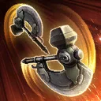
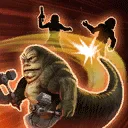
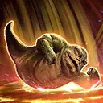

Rotta the Hutt
An arena-forged Attacker who favors the spotlight
An arena-forged Attacker who favors the spotlight

Deal Physical damage to target enemy twice and inflict 1 stack of Bleed (max 6), which can't be evaded or resisted, until the end of the encounter, and Healing Immunity and Speed Down for 1 turn. Reduce the target enemy's Defense by 20% (stacking), which can't be resisted, until the end of battle.
If Rotta the Hutt was the only ally at the start of battle: Reduce the target enemy's Critical Chance by 10% (max 50%), which can't be evaded or resisted, and Rotta gains 20 Speed (max 100) until the end of battle. Rotta recovers 10% Health and Protection.

Deal Physical damage to all enemies, dispel all buffs on them, inflict 2 stacks of Bleed (max 6) until the end of the encounter, and Off Balance on them for 2 turns. If all enemies are inflicted with Off Balance, Rotta gains a bonus turn and 40% Offense for 1 turn.
If Rotta the Hutt had a full squad of Hutt Cartel allies at the start of battle, all other allies assist and Tank allies Taunt for 2 turns, if Rotta is below 50% Health this Taunt can't be dispelled.
Omicron Boost : While in Grand Arenas if all allies were Hutt Cartel at the start of battle: This ability can't be evaded or resisted.
If Rotta was the only ally at the start of battle: He inflicts an additional stack of Bleed (max 6) until the end of the encounter on all enemies, removes 10% Turn Meter from them, reduces the cooldown of Showboat by 1, and he gains 50% Offense for 1 turn instead.

Deal Physical damage to all enemies, trigger all stacks of Bleed on them, detonate all Thermal Detonators on them, and Stun them for 1 turn. If Rotta was the only ally at the start of battle: This Stun can't be evaded or resisted.
If any enemy is defeated by this ability, all Hutt Cartel allies gain 20% Turn Meter.
Omicron Boost : While in Grand Arenas if all allies were Hutt Cartel at the start of battle: Tank allies recover 10% Protection for each enemy damaged by this ability and Attacker allies gain 10% Defense Penetration (stacking, max 50%) each time this ability is used.
If Rotta the Hutt was the only ally at the start of battle: This ability instantly defeats enemies below 40% Health (excludes Galactic Legends and raid bosses) and Rotta recovers 50% Health and Protection for each enemy defeated by this ability.
Hutt Cartel allies gain 50% Accuracy and Critical Avoidance, 200% Defense, 75% Offense, 50 Speed, and 40% Tenacity. Dark Side Hutt Cartel allies and Rotta gain 75% counter chance and 50% Critical Chance. The first time each Hutt Cartel ally falls below 50% Health, they gain Damage Immunity for 1 turn, recover 20% Health and Protection, and ally Tanks Taunt for 2 turns.
Whenever a Dark Side Hutt Cartel ally or Rotta inflicts a stack of Bleed or a Thermal Detonator on an enemy, they gain 5% Turn Meter and recover 5% Health and Protection.
If Rotta the Hutt was the only ally at the start of battle: He gains 250% Max Health and Max Protection, 50% Health Steal, 25 Speed, he can't be instantly defeated, and whenever he is Ability Blocked, Blinded, Dazed, Feared, or Stunned he dispels it and inflicts 1 stack of Bleed (max 6) until the end of the encounter and 1 Thermal Detonator on all enemies for 2 turns, which can't be evaded or resisted. If it can't be dispelled, he also gains Damage Immunity for 1 turn, which can't be dispelled.
Ally Hutt Cartel Tanks Taunt for 2 turns at the start of battle. Whenever Dark Side Support allies attack an enemy, all allies recover 10% Health, Protection, and Turn Meter. Dark Side Hutt Cartel allies and Rotta can ignore Taunt effects during their turn. All Hutt Cartel allies are immune to cooldown increase and Rotta is immune to Thermal Detonators.
If Rotta the Hutt had a full squad of Hutt Cartel allies at the start of battle, whenever they have Turn Meter removed, Rotta has a 50% chance to gain a bonus turn.
If Rotta the Hutt was the only ally at the start of battle: Whenever an enemy removes Turn Meter from him, he deals damage to all enemies equal to 10% of their Max Health (this damage can't defeat enemies) and has an additional 30% chance to gain a bonus turn.
Omicron Boost : While in Grand Arenas if all allies are Hutt Cartel at the start of battle: All allies gain 50% Max Health. If all of Rotta's other allies are Dark Side, whenever they or Rotta are inflicted with a debuff, they inflict a Thermal Detonator on the enemy that applied it for 2 turns, which can't be evaded or resisted. Whenever Rotta defeats an enemy, the cooldown of Showboat is decreased by 1 and all allies gain bonus Protection (40%, stacking) until the end of the encounter.
If Rotta was the only ally at the start of battle: He takes reduced damage from percent Health effects and defeated enemies can't be revived.

This character can't be used in the ally slot or with another large character and summons are prevented for allies.